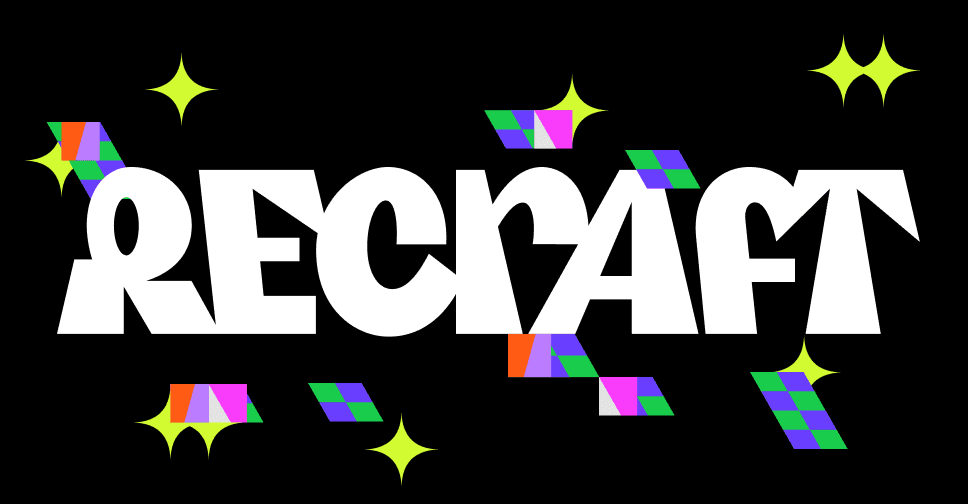

🎨 طراحی وکتور و برند با Recraft!
📰 ابزار Recraft تخصصیترین AI برای طراحان گرافیکه که فایل SVG واقعی تولید میکنه. مدل Recraft V3 رتبه اول بنچمارکهای تولید تصویر رو داره.
1️⃣ وارد محیط Canvas بشید و استایل Vector رو انتخاب کنید.
2️⃣ پرامپت و پالت رنگی برند رو وارد کنید.
3️⃣ خروجی لایهباز SVG بگیرید.
🔹 رایگان روزانه ۵۰ کردیت (حدود ۵۰ تصویر)؛ پلن Pro ۲۰ دلار. قابلیت کنترل پالت رنگ و تولید ست آیکون یکدست داره.
🔗 Recraft